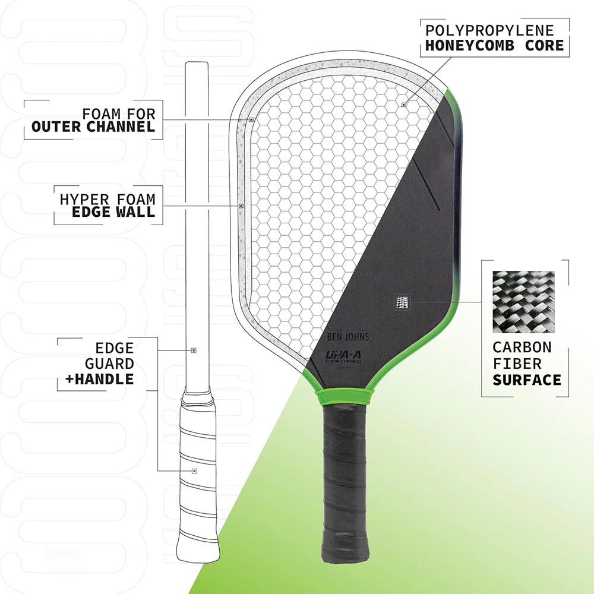
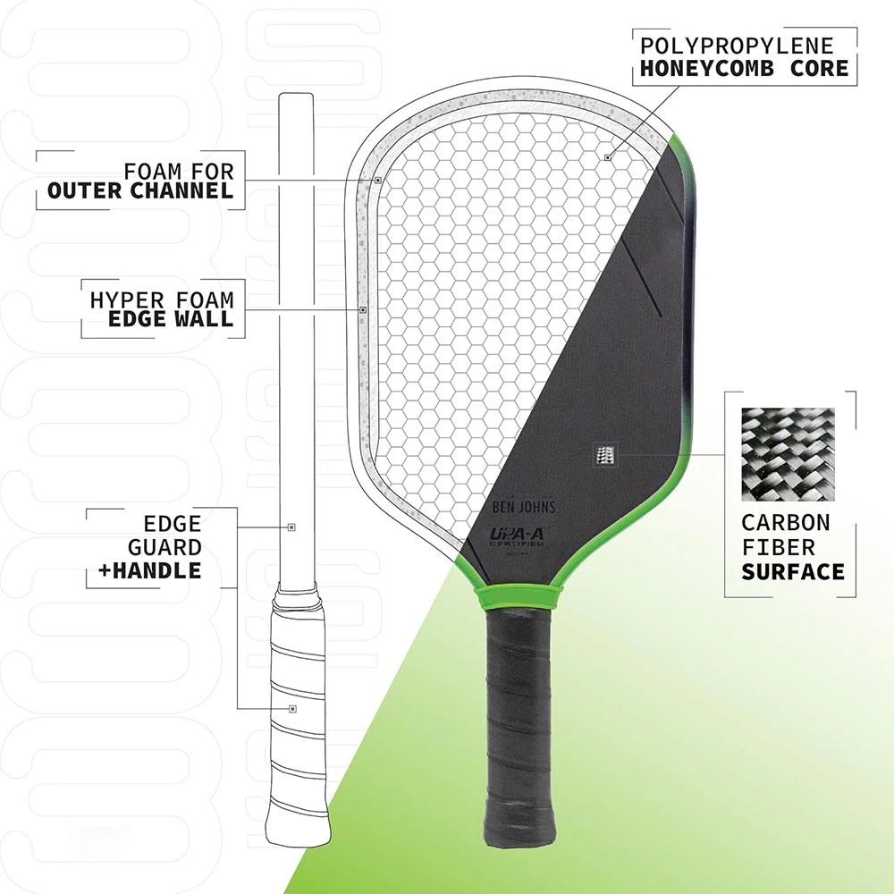

Review: Hyperion 16mm Pickleball Paddle
Introduction
After experiencing the performance of the Perseus 16mm paddle, I sought a paddle that combined similar attributes with a hybrid shape. This led me to the Hyperion 16mm Pickleball Paddle, which promised the power and spin I appreciated in the Perseus but with enhanced maneuverability. This review reflects my personal experiences with the Hyperion 16mm, highlighting its specifications, on-court performance, and overall value.
Product Specifications
- Core Thickness: 16mm Polymer
- Face Material: Carbon Friction Surface (CFS)
- Shape: Elongated Hybrid
- Paddle Length: 16.5 inches
- Paddle Width: 7.5 inches
- Grip Length: 5.5 inches
- Grip Circumference: 4.25 inches
- Average Weight: Approximately 8.4 ounces
- Shipping Time: Approximately 8 days to Ontario, Canada
Performance on the Court
Power and Spin
The Hyperion 16mm paddle delivers impressive power, comparable to the Perseus 16mm. Its Carbon Friction Surface enhances spin capabilities, allowing for effective topspin and slice shots. The elongated hybrid shape contributes to a larger sweet spot, facilitating consistent shot execution.
Maneuverability and Control
Transitioning to the hybrid shape of the Hyperion 16mm offered increased maneuverability, particularly around the kitchen line. The paddle’s design supports quick reactions and precise placements, enhancing control during fast-paced exchanges.
Customization and Adjustments
Unlike my experience with the Perseus 16mm, I found the Hyperion 16mm’s balance and weight distribution satisfactory without additional modifications. The slightly thicker grip I applied provided a comfortable hold. I also added two 3-gram lead strips at the 10 and 2 o’clock positions for increased stability.
Conclusion
The Hyperion 16mm Pickleball Paddle successfully combines power, spin, and maneuverability in a hybrid design. Its performance parallels that of the Perseus 16mm, with the added benefits of a hybrid shape for those who prefer it. This paddle is a valuable addition to any player’s arsenal, offering versatility and reliability on the court.
 

Buy the Hyperion Paddle